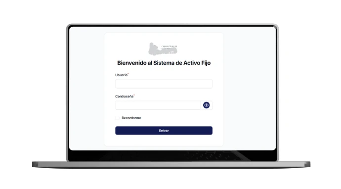

Desarrollo de un sistema web para la administración y control de activos institucionales. Permite el registro, asignación y seguimiento de bienes, control de movimientos y verificaciones físicas en la Caja Mutual de los Empleados del MINED.
Elaboración de manual técnico y manual de programador para documentación del sistema.
Tecnologías utilizadas:
